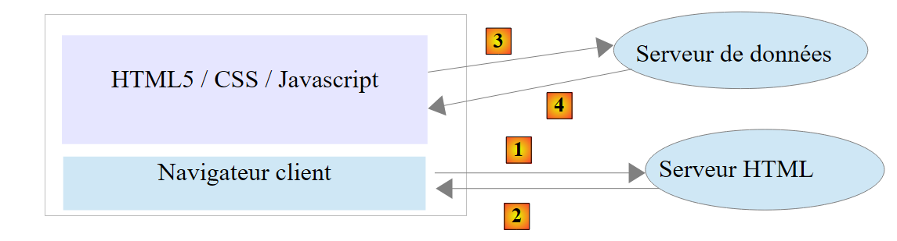
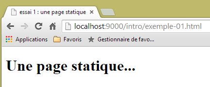
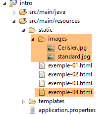
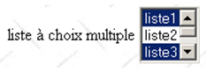
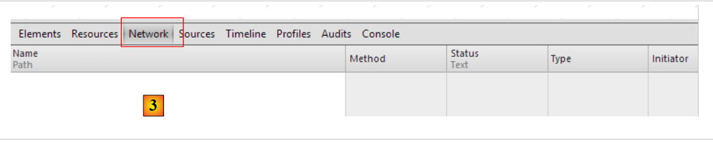

2. Os Fundamentos da Programação Web
O objetivo principal deste capítulo é apresentar os princípios fundamentais da programação web, que são independentes da tecnologia específica utilizada para os implementar. Apresenta inúmeros exemplos que o encorajamos a testar, a fim de «absorver» gradualmente a filosofia do desenvolvimento web. Os leitores que já possuam estes conhecimentos podem avançar diretamente para o Capítulo 3.
Os componentes de uma aplicação web são os seguintes:

Número | Função | Exemplos comuns |
1 | SO do servidor | Unix, Linux, Windows |
2 | Servidor Web | Apache (Unix, Linux, Windows) IIS (Windows + plataforma .NET) Node.js (Unix, Linux, Windows) |
3 | Código do lado do servidor. Pode ser executado por módulos do servidor ou por programas externos ao servidor (CGI). | JAVASCRIPT (Node.js) PHP (Apache, IIS) JAVA (Tomcat, WebSphere, JBoss, WebLogic, ...) C#, VB.NET (IIS) |
4 | Base de dados - Pode estar na mesma máquina que o programa que a utiliza ou noutra máquina através da Internet. | Oracle (Linux, Windows) MySQL (Linux, Windows) Postgres (Linux, Windows) SQL Server (Windows) |
5 | SO do cliente | Unix, Linux, Windows |
6 | Navegador Web | Chrome, Internet Explorer, Firefox, Opera, Safari, ... |
7 | Scripts do lado do cliente executados no navegador. Estes scripts não têm acesso ao disco do computador do cliente. | JavaScript (todos os navegadores) |
2.1. Troca de dados numa aplicação web com um formulário

Número | Função |
1 | O navegador solicita um URL pela primeira vez (http://machine/url). Não são passados parâmetros. |
2 | O servidor web envia a página web correspondente a essa URL. Pode ser estática ou gerada dinamicamente por um script do lado do servidor (SA) que pode ter utilizado conteúdo de bases de dados (SB, SC). Aqui, o script irá detetar que a URL foi solicitada sem quaisquer parâmetros e irá gerar a página web inicial. O navegador recebe a página e exibe-a (CA). Os scripts do lado do navegador (CB) podem ter modificado a página inicial enviada pelo servidor. Em seguida, através de interações entre o utilizador (CD) e os scripts (CB), a página web será modificada. Em particular, os formulários serão preenchidos. |
3 | O utilizador submete os dados do formulário, que devem então ser enviados para o servidor web. O navegador solicita a URL inicial ou outra, conforme apropriado, e transmite simultaneamente os valores do formulário para o servidor. Pode utilizar dois métodos para isso: GET e POST. Ao receber o pedido do cliente, o servidor aciona o script (SA) associado à URL solicitada, que irá detetar os parâmetros e processá-los. |
4 | O servidor entrega a página web gerada pelo programa (SA, SB, SC). Este passo é idêntico ao passo 2 anterior. A comunicação prossegue agora de acordo com os passos 2 e 3. |
2.2. Páginas Web estáticas, páginas Web dinâmicas
Uma página estática é representada por um ficheiro HTML. Uma página dinâmica é uma página HTML gerada «em tempo real» pelo servidor web.
2.2.1. Página HTML (HyperText Markup Language) estática
Vamos criar o nosso primeiro projeto Spring MVC [1-2]:
 |
- Em [1-2], criamos um novo projeto baseado no Spring Boot [http://projects.spring.io/spring-boot/];
 |
- as informações [3-7] referem-se à configuração Maven do projeto;
- em [3], o nome do projeto Maven;
- em [4], o grupo Maven onde será colocada a saída da compilação do projeto;
- em [5], o nome atribuído ao resultado da compilação;
- em [6], uma descrição do projeto;
- em [7], o pacote no qual a classe executável do projeto será colocada;
- em [8], a natureza do projeto. Trata-se de um projeto web com vistas Thymeleaf. Aqui, vemos todas as dependências Maven prontas a usar fornecidas pelo projeto Spring Boot;
- em [9], especificamos que o resultado da compilação do Maven será empacotado num arquivo JAR em vez de um WAR. O projeto utilizará então um servidor Tomcat incorporado, que será incluído nas suas dependências;
- em [10], avançamos para o próximo passo do assistente;
 |
- em [11], especificamos o diretório do projeto;
- em [12], concluímos o assistente;
- Em [13], o projeto gerado.
Vamos examinar o ficheiro [pom.xml] gerado:
<?xml version="1.0" encoding="UTF-8"?>
<project xmlns="http://maven.apache.org/POM/4.0.0" xmlns:xsi="http://www.w3.org/2001/XMLSchema-instance"
xsi:schemaLocation="http://maven.apache.org/POM/4.0.0 http://maven.apache.org/xsd/maven-4.0.0.xsd">
<modelVersion>4.0.0</modelVersion>
<groupId>istia.st.springmvc</groupId>
<artifactId>intro</artifactId>
<version>0.0.1-SNAPSHOT</version>
<packaging>jar</packaging>
<name>springmvc-intro</name>
<description>Les bases de la programmation web</description>
<parent>
<groupId>org.springframework.boot</groupId>
<artifactId>spring-boot-starter-parent</artifactId>
<version>1.1.9.RELEASE</version>
<relativePath /> <!-- lookup parent from repository -->
</parent>
<dependencies>
<dependency>
<groupId>org.springframework.boot</groupId>
<artifactId>spring-boot-starter-web</artifactId>
</dependency>
<dependency>
<groupId>org.springframework.boot</groupId>
<artifactId>spring-boot-starter-test</artifactId>
<scope>test</scope>
</dependency>
</dependencies>
<properties>
<project.build.sourceEncoding>UTF-8</project.build.sourceEncoding>
<start-class>istia.st.springmvc.Application</start-class>
<java.version>1.7</java.version>
</properties>
<build>
<plugins>
<plugin>
<groupId>org.springframework.boot</groupId>
<artifactId>spring-boot-maven-plugin</artifactId>
</plugin>
</plugins>
</build>
</project>
Inclui todas as informações fornecidas no assistente. Nas linhas 26–30, encontramos uma dependência da qual não tínhamos conhecimento. Permite a integração dos testes unitários JUnit com o Spring.
Vamos começar por criar uma página HTML estática neste projeto. Por predefinição, deve ser colocada na pasta [src/main/resources/static]:
 |
- Em [1-4], crie um ficheiro HTML na pasta [static];
 |
- em [6], atribua um nome à página;
- em [7], a página foi adicionada.
O conteúdo da página criada é o seguinte:
<!DOCTYPE html>
<html>
<head>
<meta charset="ISO-8859-1">
<title>Insert title here</title>
</head>
<body>
</body>
</html>
- linhas 2-10: o código é delimitado pela tag raiz <html>;
- linhas 3-6: a tag <head> delimita o que se denomina cabeçalho da página;
- linhas 7-9: a tag <body> delimita o que é chamado de corpo da página.
Vamos modificar este código da seguinte forma:
<!DOCTYPE html>
<html xmlns="http://www.w3.org/1999/xhtml">
<head>
<meta http-equiv="Content-Type" content="text/html; charset=utf-8" />
<title>essai 1 : une page statique</title>
</head>
<body>
<h1>Une page statique...</h1>
</body>
</html>
- linha 5: define o título da página – será exibido como o título da janela do navegador que exibe a página;
- linha 8: texto em fonte grande (<h1>).
Vamos executar a aplicação [1-3]:
 |
depois, utilizando um navegador, vamos aceder ao URL [http://localhost:8080/exemple-01.html]:
 |
- em [1], a URL da página exibida;
- em [2], o título da janela – fornecido pela tag <title> da página;
- em [3], o corpo da página – fornecido pela tag <h1>.
Vejamos [4-5], o código HTML recebido pelo navegador:
 |
- Em [5], o navegador recebeu a página HTML que criámos. Interpretou-a e apresentou-a como uma representação gráfica.
2.2.2. Uma página Thymeleaf dinâmica
Agora vamos criar uma página Thymeleaf. Trata-se de uma página HTML padrão com tags enriquecidas com atributos [Thymeleaf] [http://www.thymeleaf.org/]. Seguimos um processo semelhante ao da criação da página HTML, mas desta vez a nova página HTML deve ser colocada na pasta [templates]:
 |
A página [example-02.html] terá o seguinte aspeto:
<!DOCTYPE HTML>
<html xmlns:th="http://www.thymeleaf.org">
<head>
<title>spring mvc intro</title>
<meta http-equiv="Content-Type" content="text/html; charset=UTF-8" />
</head>
<body>
<p th:text="'Il est ' + ${heure}">Voici l'heure</p>
</body>
</html>
- linha 8: a tag <p> é uma tag HTML que insere um parágrafo na página exibida. [th:text] é um atributo [Thymeleaf] que tem duas finalidades diferentes, dependendo se o [Thymeleaf] está ativo ou não:
- se o [Thymeleaf] não analisar a página HTML, o atributo [th:text] será ignorado, uma vez que é desconhecido em HTML. O texto apresentado será então [Aqui está a hora],
- se o [Thymeleaf] interpretar a página HTML, o atributo [th:text] será avaliado e o seu valor substituirá o texto [Aqui está a hora]. O seu valor será algo como [São 17:11:06];
Vamos ver isto em ação. Vamos duplicar a página [templates/example-02.html] para a pasta [static]. As páginas HTML colocadas nesta pasta não são interpretadas pelo [Thymeleaf]:
 |  |  |
Executamos a aplicação como já fizemos várias vezes antes e, em seguida, acedemos ao URL [http://localhost:8080/exemple-02.html] num navegador:
 |
Vemos em [1] que o atributo [th:text] não foi interpretado e também não causou um erro. O código-fonte da página apresentado em [2] mostra que o navegador recebeu com sucesso a página completa.
Voltemos à página [example-02.html] na pasta [templates]:
 |
As páginas HTML colocadas na pasta [templates] são processadas pelo [Thymeleaf]. Vamos voltar ao código da página:
<!DOCTYPE HTML>
<html xmlns:th="http://www.thymeleaf.org">
<head>
<title>spring mvc intro</title>
<meta http-equiv="Content-Type" content="text/html; charset=UTF-8" />
</head>
<body>
<p th:text="'Il est ' + ${heure}">Voici l'heure</p>
</body>
</html>
- linha 7: [Thymeleaf] interpretará o atributo [th:text] e substituirá [Aqui está a hora] pelo valor da expressão:
Esta expressão utiliza a variável [${time}], em que [time] pertence ao modelo de visualização [example-02.html]. Por isso, precisamos de criar este modelo. Para tal, seguiremos o exemplo discutido na secção 1.6. Atualizamos o projeto da seguinte forma:
 |
Em [1], adicionamos o seguinte controlador:
package istia.st.springmvc;
import java.text.SimpleDateFormat;
import java.util.Date;
import org.springframework.stereotype.Controller;
import org.springframework.ui.Model;
import org.springframework.web.bind.annotation.RequestMapping;
@Controller
public class MyController {
@RequestMapping("/")
public String heure(Model model) {
// time format
SimpleDateFormat formater = new SimpleDateFormat("HH:MM:ss");
// the hour of the moment
String heure = formater.format(new Date());
// set the time in the view model
model.addAttribute("heure", heure);
// display the [exemple-02.html] view
return "exemple-02";
}
}
- linhas 13-14: o método [time] trata da URL [/];
- linha 14: [Model model] é um modelo vazio. A ação [time] deve preenchê-lo com os atributos que deseja ver no modelo. Sabemos que a vista [example-02.html] espera um atributo chamado [time];
- linhas 19-22: implementa o que acabámos de explicar. A vista [example-02.html] será apresentada (linha 22) com um atributo chamado [time] no seu modelo (linha 20);
- linha 16: é criado um formatador de data. O formato [HH:MM:ss] utilizado é um formato [horas:minutos:segundos], em que as horas estão no intervalo [0-24];
- linha 18: utilizando este formatador, formatamos a data de hoje;
- linha 20: a hora resultante é atribuída a um atributo chamado [time];
Iniciamos a aplicação e solicitamos o URL [/]:
 |
- [1] mostra a página resultante e [2] o seu conteúdo HTML. Podemos ver que o texto inicial [Aqui está a hora] desapareceu completamente;
Se atualizarmos agora a página [1] (F5), obtemos uma apresentação diferente (nova hora), apesar de o URL não se alterar. Este é o aspeto dinâmico da página: o seu conteúdo pode mudar ao longo do tempo.
Pelo exposto, podemos ver a natureza fundamentalmente diferente das páginas dinâmicas e estáticas.
2.2.3. Configurar a aplicação Spring Boot
Voltemos à arquitetura do projeto Eclipse:
 |
O ficheiro [application.properties] é utilizado para configurar a aplicação Spring Boot. Por enquanto, este ficheiro está vazio. Pode ser utilizado para configurar a aplicação de várias formas, conforme descrito na URL [http://docs.spring.io/spring-boot/docs/current/reference/html/common-application-properties.html]. Iremos utilizar o seguinte ficheiro [application.properties] [2]:
- Linha 1: define a porta de serviço da aplicação web;
- linha 2: define o contexto da aplicação web;
Com esta configuração, a página estática [example-01.html] estará acessível na URL [http://localhost:9000/intro/exemple-01.html]:
 |
2.3. Scripts do lado do navegador
Uma página HTML pode conter scripts que serão executados pelo navegador. A principal linguagem de script do lado do navegador é, atualmente (janeiro de 2015), o JavaScript. Centenas de bibliotecas foram criadas utilizando esta linguagem para facilitar a vida dos programadores.
Vamos criar uma nova página [example-03.html] na pasta [static] do projeto existente:
 |
Edite o ficheiro [example-03.html] com o seguinte conteúdo:
<!DOCTYPE html>
<html xmlns="http://www.w3.org/1999/xhtml">
<head>
<meta http-equiv="Content-Type" content="text/html; charset=utf-8" />
<title>exemple Javascript</title>
<script type="text/javascript">
function réagir() {
alert("Vous avez cliqué sur le bouton !");
}
</script>
</head>
<body>
<input type="button" value="Cliquez-moi" onclick="réagir()" />
</body>
</html>
- Linha 13: Define um botão (atributo type) com o texto «Clique aqui» (atributo value). Quando clicado, a função JavaScript [react] é executada (atributo onclick);
- linhas 6–10: um script JavaScript;
- linhas 7–9: a função [react];
- Linha 8: exibe uma caixa de diálogo com a mensagem [Clicou no botão].
Vamos visualizar a página num navegador:
 |
- em [1], a página exibida;
- em [2], a caixa de diálogo quando o botão é clicado.
Quando clica no botão, não há comunicação com o servidor. O código JavaScript é executado pelo navegador.
Com o vasto número de bibliotecas JavaScript disponíveis, podemos agora incorporar aplicações completas diretamente no navegador. Isto leva às seguintes arquiteturas:
 |
- 1-2: o servidor HTML é um servidor para páginas estáticas em HTML5/CSS/JavaScript;
- 3-4: As páginas HTML5/CSS/JavaScript fornecidas interagem diretamente com o servidor de dados. O servidor de dados fornece dados sem marcação HTML. O JavaScript insere esses dados nas páginas HTML já presentes no navegador.
Nesta arquitetura, o código JavaScript pode tornar-se pesado. Por isso, pretendemos organizá-lo em camadas, tal como fazemos com o código do lado do servidor:
 |
- a camada [UI] é a que interage com o utilizador;
- a camada [DAO] interage com o servidor de dados;
- a camada [business] contém procedimentos de negócio que não interagem nem com o utilizador nem com o servidor de dados. Esta camada pode não existir.
2.4. Comunicação cliente-servidor
Voltemos ao nosso diagrama inicial que ilustra os componentes de uma aplicação web:

Aqui, estamos interessados nas trocas entre a máquina cliente e a máquina servidor. Estas ocorrem através de uma rede, e vale a pena rever a estrutura geral das trocas entre duas máquinas remotas.
2.4.1. O Modelo OSI
O modelo de rede aberta conhecido como OSI (Open Systems Interconnection Reference Model), definido pela ISO (Organização Internacional de Normalização), descreve uma rede ideal onde a comunicação entre máquinas pode ser representada por um modelo de sete camadas:
 |
Cada camada recebe serviços da camada abaixo dela e fornece os seus próprios serviços à camada acima dela. Suponha que duas aplicações localizadas em máquinas diferentes, A e B, queiram comunicar: fazem-no na camada de Aplicação. Não precisam de conhecer todos os detalhes de como a rede funciona: cada aplicação passa a informação que deseja transmitir para a camada abaixo dela: a camada de Apresentação. A aplicação, portanto, só precisa de conhecer as regras para interagir com a camada de Apresentação. Assim que a informação chega à camada de Apresentação, é passada de acordo com outras regras para a camada de Sessão, e assim sucessivamente, até que a informação chegue ao meio físico e seja fisicamente transmitida para a máquina de destino. Aí, passará pelo processo inverso ao que passou na máquina de envio.
Em cada camada, o processo emissor responsável pelo envio da informação envia-a a um processo recetor na outra máquina pertencente à mesma camada que ele próprio. Faz-o de acordo com certas regras conhecidas como protocolo da camada. Temos, portanto, o seguinte diagrama de comunicação final:
 |
As funções das diferentes camadas são as seguintes:
Física | Assegura a transmissão de bits através de um meio físico. Esta camada inclui equipamentos terminais de processamento de dados (DPTE), tais como terminais ou computadores, bem como equipamentos de terminação de circuitos de dados (DCTE), tais como moduladores/demoduladores, multiplexadores e concentradores. As principais considerações a este nível são:
|
Camada de Ligação de Dados | Oculta as características físicas da Camada Física. Deteta e corrige erros de transmissão. |
Rede | Gere o caminho que a informação enviada pela rede deve seguir. Isto denomina-se encaminhamento: determinar a rota que a informação deve seguir para chegar ao seu destino. |
Transporte | Permite a comunicação entre duas aplicações, enquanto as camadas anteriores apenas permitiam a comunicação entre máquinas. Um serviço prestado por esta camada pode ser a multiplexação: a camada de transporte pode utilizar uma única ligação de rede (de máquina para máquina) para transmitir dados pertencentes a várias aplicações. |
Sessão | Esta camada fornece serviços que permitem a uma aplicação abrir e manter uma sessão de trabalho numa máquina remota. |
Apresentação | Tem como objetivo padronizar a representação de dados entre diferentes máquinas. Assim, os dados provenientes da máquina A serão «formatados» pela camada de apresentação da máquina A de acordo com um formato padrão antes de serem enviados pela rede. Ao chegarem à camada de apresentação da máquina de destino B, que os reconhecerá graças ao seu formato padrão, serão formatados de forma diferente para que a aplicação na máquina B os possa reconhecer. |
Aplicação | Neste nível, encontramos aplicações que estão geralmente próximas do utilizador, tais como o e-mail ou a transferência de ficheiros. |
2.4.2. O Modelo TCP/IP
O modelo OSI é um modelo ideal. O conjunto de protocolos TCP/IP aproxima-se dele da seguinte forma:
 |
- a interface de rede (a placa de rede do computador) desempenha as funções das camadas 1 e 2 do modelo OSI
- a camada IP (Protocolo de Internet) desempenha as funções da camada 3 (rede)
- A camada TCP (Protocolo de Controlo de Transmissão) ou UDP (Protocolo de Datagrama do Utilizador) desempenha as funções da Camada 4 (transporte). O protocolo TCP garante que os pacotes de dados trocados entre máquinas d a cheguem ao seu destino. Caso contrário, reenvia os pacotes perdidos. O protocolo UDP não desempenha esta tarefa, pelo que cabe ao programador da aplicação fazê-lo. É por isso que, na Internet — que não é uma rede 100% fiável —, o protocolo TCP é o mais utilizado. A isto se refere-se como uma rede TCP-IP.
- A camada de Aplicação abrange as funções das camadas 5 a 7 do modelo OSI.
As aplicações Web residem na camada de Aplicação e, por isso, dependem dos protocolos TCP/IP. As camadas de Aplicação das máquinas cliente e servidor trocam mensagens, que são confiadas às camadas 1 a 4 do modelo para serem encaminhadas para o seu destino. Para comunicarem entre si, as camadas de Aplicação de ambas as máquinas devem «falar» a mesma língua ou protocolo. O protocolo utilizado pelas aplicações Web denomina-se HTTP (HyperText Transfer Protocol). Trata-se de um protocolo baseado em texto, o que significa que as máquinas trocam linhas de texto através da rede para comunicarem. Estas trocas são padronizadas, o que significa que o cliente dispõe de um conjunto de mensagens para indicar ao servidor exatamente o que pretende, e o servidor também dispõe de um conjunto de mensagens para fornecer a sua resposta ao cliente. Esta troca de mensagens assume a seguinte forma:

Cliente --> Servidor
Quando o cliente faz um pedido ao servidor web, envia
- linhas de texto no formato HTTP para indicar o que pretende;
- uma linha vazia;
- opcionalmente, um documento.
Servidor --> Cliente
Quando o servidor responde ao cliente, envia
- linhas de texto no formato HTTP para indicar o que está a enviar;
- uma linha vazia;
- opcionalmente, um documento.
As trocas seguem, portanto, o mesmo formato em ambas as direções. Em ambos os casos, pode ser enviado um documento, embora seja raro um cliente enviar um documento ao servidor. Mas o protocolo HTTP permite isso. É isso que permite, por exemplo, que os assinantes de um ISP carreguem vários documentos para o seu site pessoal hospedado por esse ISP. Os documentos trocados podem ser de qualquer tipo. Considere um navegador a solicitar uma página web que contenha imagens:
- o navegador liga-se ao servidor web e solicita a página que deseja. Os recursos solicitados são identificados de forma única por URLs (Uniform Resource Locators). O navegador envia apenas cabeçalhos HTTP e nenhum documento.
- O servidor responde. Primeiro, envia cabeçalhos HTTP indicando que tipo de resposta está a enviar. Esta pode ser um erro, caso a página solicitada não exista. Se a página existir, o servidor indicará nos cabeçalhos HTTP da sua resposta que irá enviar um documento HTML (HyperText Markup Language) a seguir a eles. Este documento é uma sequência de linhas de texto em formato HTML. O texto HTML contém tags (marcadores) que fornecem ao navegador instruções sobre como apresentar o texto.
- O cliente sabe, a partir dos cabeçalhos HTTP do servidor, que irá receber um documento HTML. Ele irá analisar este documento e poderá perceber que este contém referências a imagens. Estas imagens não estão incluídas no documento HTML. Por isso, faz um novo pedido ao mesmo servidor web para solicitar a primeira imagem de que necessita. Este pedido é idêntico ao feito no passo 1, exceto que o recurso solicitado é diferente. O servidor processará esta solicitação enviando a imagem solicitada ao cliente. Desta vez, na sua resposta, os cabeçalhos HTTP especificarão que o documento enviado é uma imagem e não um documento HTML.
- O cliente recupera a imagem enviada. Os passos 3 e 4 serão repetidos até que o cliente (normalmente um navegador) tenha todos os documentos necessários para apresentar a página na íntegra.
2.4.3. O Protocolo HTTP
Vamos explorar o protocolo HTTP através de exemplos. O que é que um navegador e um servidor web trocam entre si?
O serviço web ou serviço HTTP é um serviço TCP/IP que normalmente opera na porta 80. Pode operar numa porta diferente. Nesse caso, o navegador do cliente teria de especificar essa porta no URL que solicita. Um URL tem geralmente o seguinte formato:
protocolo://máquina[:porta]/caminho/informação
onde
protocolo | http para o serviço Web. Um navegador também pode atuar como cliente para FTP, news, Telnet e outros serviços. |
máquina | nome da máquina que hospeda o serviço Web |
porta | Porta do serviço Web. Se for 80, o número da porta pode ser omitido. Este é o caso mais comum |
caminho | caminho para o recurso solicitado |
info | informações adicionais fornecidas ao servidor para especificar o pedido do cliente |
O que faz um navegador quando um utilizador solicita o carregamento de um URL?
- Estabelece uma ligação TCP/IP com a máquina e a porta especificadas na parte máquina[:porta] da URL. Estabelecer uma ligação TCP/IP significa criar um «canal» de comunicação entre duas máquinas. Uma vez estabelecido este canal, toda a informação trocada entre as duas máquinas passará por ele. A criação deste canal TCP/IP ainda não envolve o protocolo HTTP da Web.
- Assim que a ligação TCP-IP é estabelecida, o cliente envia o seu pedido ao servidor Web, enviando linhas de texto (comandos) no formato HTTP. Envia a parte path/info do URL para o servidor
- O servidor responderá da mesma forma e através da mesma ligação
- Uma das duas partes decidirá encerrar a ligação. Isto depende do protocolo HTTP utilizado. Com o HTTP 1.0, o servidor encerra a ligação após cada uma das suas respostas. Isto obriga um cliente que precise de efetuar múltiplas solicitações para recuperar os vários documentos que compõem uma página web a abrir uma nova ligação para cada solicitação, o que acarreta um custo. Com o protocolo HTTP/1.1, o cliente pode indicar ao servidor para manter a ligação aberta até que lhe diga para a encerrar. Pode, assim, recuperar todos os documentos de uma página web com uma única ligação e encerrar a ligação por si próprio assim que o último documento tiver sido obtido. O servidor detetará este encerramento e encerrará também a ligação.
Para analisar as trocas de dados entre um cliente e um servidor web, utilizaremos a extensão [Advanced Rest Client] para o navegador Chrome, que instalámos na Secção 9.6. Encontramo-nos na seguinte situação:

O servidor web pode ser qualquer servidor. Aqui, o nosso objetivo é examinar as trocas que ocorrerão entre o navegador e o servidor web. Anteriormente, criámos a seguinte página HTML estática:
<!DOCTYPE html>
<html xmlns="http://www.w3.org/1999/xhtml">
<head>
<meta http-equiv="Content-Type" content="text/html; charset=utf-8" />
<title>essai 1 : une page statique</title>
</head>
<body>
<h1>Une page statique...</h1>
</body>
</html>
que visualizamos num navegador:
 |
Podemos ver que o URL solicitado é: [http://localhost:9000/intro/exemple-01.html]. O servidor web é, portanto, o localhost (=máquina local) na porta 9000. Vamos usar a aplicação [Advanced Rest Client] para solicitar o mesmo URL:
 |
- Em [1], inicie a aplicação (no separador [Aplicações] de um novo separador do Chrome);
- em [2], selecione a opção [Solicitar];
- em [3], especifique o servidor a consultar: http://localhost:9000;
- em [4], especifique o URL solicitado: /intro/example-01.html;
- em [5], adicione quaisquer parâmetros à URL. Nenhum neste caso;
- em [6], especifique o método HTTP utilizado para o pedido, neste caso GET.
Isto resulta na seguinte solicitação:
 |
A solicitação preparada desta forma [7] é enviada ao servidor por [8]. A resposta recebida é então a seguinte:
 |
Mencionámos anteriormente que as trocas cliente-servidor assumem a seguinte forma:
- Em [1], vemos os cabeçalhos HTTP enviados pelo navegador na sua solicitação. Não havia nenhum documento para enviar;
- em [2], vemos os cabeçalhos HTTP enviados pelo servidor na resposta. Em [3], vemos o documento que ele enviou.
Em [3], reconhecemos a página HTML estática que colocámos no servidor web.
Vamos examinar a solicitação HTTP do navegador:
- A linha 1 não foi exibida pela aplicação;
- Linha 6: O navegador identifica-se com o cabeçalho [User-Agent];
- linha 7: o navegador indica que está a enviar um documento de texto (text/plain) no formato UTF-8 para o servidor. Na verdade, neste caso, o navegador não enviou nenhum documento;
- linha 8: o navegador indica que aceita qualquer tipo de documento em resposta;
- linha 9: o navegador especifica os formatos de documento aceites;
- linha 10: o navegador especifica os idiomas que prefere, por ordem de preferência.
O servidor respondeu enviando os seguintes cabeçalhos HTTP:
- linha 1: não foi exibida pela aplicação;
- linha 2: o servidor identifica-se, neste caso um servidor Apache-Coyote;
- linha 3: a data da última modificação do documento;
- linha 4: o tipo de documento enviado pelo servidor. Aqui, um documento HTML;
- linha 5: o tamanho em bytes do documento HTML enviado.
- linha 6: data e hora da resposta;
2.4.4. Conclusão
Explorámos a estrutura do pedido de um cliente web e a resposta do servidor a esse pedido, utilizando alguns exemplos. A comunicação ocorre através do protocolo HTTP, um conjunto de comandos baseados em texto trocados entre as duas partes. O pedido do cliente e a resposta do servidor seguem a mesma estrutura:
Os dois comandos comuns para solicitar um recurso são GET e POST. O comando GET não é acompanhado por um documento. O comando POST, por outro lado, é acompanhado por um documento que é um , na maioria das vezes, uma sequência de caracteres contendo todos os valores introduzidos num formulário. O comando HEAD permite solicitar apenas os cabeçalhos HTTP e não é acompanhado por um documento.
Em resposta a um pedido do cliente, o servidor envia uma resposta com a mesma estrutura. O recurso solicitado é transmitido na secção [Document], a menos que o comando do cliente tenha sido HEAD, caso em que apenas os cabeçalhos HTTP são enviados.
2.5. Noções básicas de HTML
Um navegador da Web pode exibir vários documentos, sendo o mais comum o documento HTML (HyperText Markup Language). Trata-se de texto formatado utilizando tags na forma <tag>texto</tag>. Assim, o texto <B>importante</B> exibirá o texto «importante» em negrito. Existem tags independentes, como a tag <hr/>, que exibe uma linha horizontal. Não iremos rever todas as tags que podem ser encontradas no texto HTML. Existem muitos programas de software WYSIWYG que permitem criar uma página web sem escrever uma única linha de código HTML. Estas ferramentas geram automaticamente o código HTML para um layout criado utilizando o rato e controlos predefinidos. Pode, assim, inserir (utilizando o rato) uma tabela na página e, em seguida, visualizar o código HTML gerado pelo software para descobrir as tags a utilizar para definir uma tabela numa página web. É tão simples quanto isso. Além disso, o conhecimento de HTML é essencial, uma vez que as aplicações web dinâmicas têm de gerar elas próprias o código HTML para enviar aos clientes web. Este código é gerado programaticamente e, naturalmente, é necessário saber o que gerar para que o cliente receba a página web que deseja.
Resumindo, não é necessário conhecer toda a linguagem HTML para começar a programar para a Web. No entanto, este conhecimento é necessário e pode ser adquirido através da utilização de construtores de páginas Web WYSIWYG, como o DreamWeaver e dezenas de outros. Outra forma de descobrir as complexidades do HTML é navegar na Web e visualizar o código-fonte de páginas que apresentem elementos interessantes que ainda não tenha encontrado.
2.5.1. Um exemplo
Considere o exemplo seguinte, que apresenta alguns elementos comumente encontrados num documento web, tais como:
- uma tabela;
- uma imagem;
- um link.
 |  |
Um documento HTML tem geralmente a seguinte estrutura:
<html> <head> <title>Um título</title> ... </head> <atributos do corpo> ... </body></html>
Todo o documento está delimitado pelas tags <html>...</html>. É composto por duas partes:
- <head>...</head>: esta é a parte não exibível do documento. Fornece informações ao navegador que irá exibir o documento. Contém frequentemente a tag <title>...</title>, que define o texto que aparecerá na barra de título do navegador. Pode também conter outras tags, nomeadamente as que definem as palavras-chave do documento, que são depois utilizadas pelos motores de busca. Esta secção pode ainda conter scripts, geralmente escritos em JavaScript ou VBScript, que serão executados pelo navegador.
- <atributos do corpo>...</body>: Esta é a secção que será apresentada pelo navegador. As etiquetas HTML contidas nesta secção indicam ao navegador o layout visual «pretendido» para o documento. Cada navegador interpreta estas etiquetas à sua maneira. Consequentemente, dois navegadores podem apresentar o mesmo documento web de forma diferente. Este é, geralmente, um dos desafios enfrentados pelos web designers.
O código HTML para o nosso documento de exemplo é o seguinte:
<!DOCTYPE html>
<html xmlns="http://www.w3.org/1999/xhtml">
<head>
<meta http-equiv="Content-Type" content="text/html; charset=utf-8" />
<title>balises</title>
</head>
<body style="height: 400px; width: 400px; background-image: url(images/standard.jpg)">
<h1 style="text-align: center">Les balises HTML</h1>
<hr />
<table border="1">
<thead>
<tr>
<th>Colonne 1</th>
<th>Colonne 2</th>
<th>Colonne 3</th>
</tr>
</thead>
<tbody>
<tr>
<td>cellule(1,1)</td>
<td style="width: 150px; text-align: center;">cellule(1,2)</td>
<td>cellule(1,3)</td>
</tr>
<tr>
<td>cellule(2,1)</td>
<td>cellule(2,2)</td>
<td>cellule(2,3</td>
</tr>
</tbody>
</table>
<table>
<tr>
<td>Une image</td>
<td><img border="0" src="images/cerisier.jpg" /></td>
</tr>
<tr>
<td>le site de l'ISTIA</td>
<td><a href="http://istia.univ-angers.fr">ici</a></td>
</tr>
</table>
</body>
</html>
HTML | Etiquetas HTML e exemplos |
título do documento | <title>tags</title> (linha 5) O texto «tags» aparecerá na barra de título do navegador quando o documento for exibido |
barra horizontal | <hr/>: exibe uma linha horizontal (linha 10) |
tabela | <atributos da tabela>....</table>: para definir a tabela (linhas 11, 31) <thead>...</thead>: para definir os cabeçalhos das colunas (linhas 12, 18) <tbody>...</tbody>: para definir o conteúdo da tabela ( , linhas 19, 30) <atributos tr>...</tr>: para definir uma linha (linhas 20, 24) <td attributes>...</td>: para definir uma célula (linha 21) exemplos: <table border="1">...</table>: o atributo border define a espessura da borda da tabela <td style="width: 150px; text-align: center;">cell(1,2)</td>: define uma célula cujo conteúdo será cell(1,2). Este conteúdo será centralizado horizontalmente (text-align: center). A célula terá uma largura de 150 píxeis (width: 150px) |
imagem | <img border="0" src="/images/cherrytree.jpg"/> (linha 36): define uma imagem sem borda (border="0") cujo ficheiro de origem é /images/cherrytree.jpg no servidor web (src="/images/cherrytree.jpg"). Este link está localizado num documento web acessível através do URL http://localhost:port/intro/exemple-04.html. Por conseguinte, o navegador irá solicitar o URL http://localhost:port/intro/images/cerisier.jpg para recuperar a imagem aqui referenciada. |
link | <a href="http://istia.univ-angers.fr">here</a> (linha 40): faz com que o texto «here» funcione como um link para a URL http://istia.univ-angers.fr. |
fundo da página | <body style="height:400px;width:400px;background-image:url(images/standard.jpg)"> (linha 8): especifica que a imagem a ser utilizada como fundo da página se encontra na URL [images/standard.jpg] no servidor web. No contexto do nosso exemplo, o navegador irá solicitar o URL http://localhost:port/intro/images/standard.jpg para recuperar esta imagem de fundo. Além disso, o corpo do documento será apresentado dentro de um retângulo com 400 píxeis de altura e 400 píxeis de largura. |
Neste exemplo simples, podemos ver que, para renderizar o documento na íntegra, o navegador deve efetuar três pedidos ao servidor:
- http://localhost:port/intro/exemple-04.html para recuperar o código-fonte HTML do documento
- http://localhost:port/intro/images/cerisier.jpg para recuperar a imagem cerisier.jpg
- http://localhost:port/intro/images/standard.jpg para recuperar a imagem de fundo standard.jpg
2.5.2. Um formulário HTML
O exemplo seguinte mostra um formulário:
 |  |
O código HTML que produz esta apresentação é o seguinte:
<!DOCTYPE html>
<html xmlns="http://www.w3.org/1999/xhtml">
<head>
<meta http-equiv="Content-Type" content="text/html; charset=utf-8" />
<title>formulaire</title>
<script type="text/javascript">
function effacer() {
alert("Vous avez cliqué sur le bouton Effacer");
}
</script>
</head>
<body style="height: 400px; width: 400px; background-image: url(images/standard.jpg)">
<h1 style="text-align: center">Formulaire HTML</h1>
<form method="post" action="postFormulaire">
<table>
<tr>
<td>Etes-vous marié(e)</td>
<td>
<input type="radio" value="Oui" name="R1" />Oui
<input type="radio" name="R1" value="non" checked="checked" />Non
</td>
</tr>
<tr>
<td>Cases à cocher</td>
<td>
<input type="checkbox" name="C1" value="un" />1
<input type="checkbox" name="C2" value="deux" checked="checked" />2
<input type="checkbox" name="C3" value="trois" />3
</td>
</tr>
<tr>
<td>Champ de saisie</td>
<td>
<input type="text" name="txtSaisie" size="20" value="qqs mots" />
</td>
</tr>
<tr>
<td>Mot de passe</td>
<td>
<input type="password" name="txtMdp" size="20" value="unMotDePasse" />
</td>
</tr>
<tr>
<td>Boîte de saisie</td>
<td>
<textarea rows="2" name="areaSaisie" cols="20">
ligne1
ligne2
ligne3
</textarea>
</td>
</tr>
<tr>
<td>combo</td>
<td>
<select size="1" name="cmbValeurs">
<option value="1">choix1</option>
<option selected="selected" value="2">choix2</option>
<option value="3">choix3</option>
</select>
</td>
</tr>
<tr>
<td>liste à choix simple</td>
<td>
<select size="3" name="lst1">
<option selected="selected" value="1">liste1</option>
<option value="2">liste2</option>
<option value="3">liste3</option>
<option value="4">liste4</option>
<option value="5">liste5</option>
</select>
</td>
</tr>
<tr>
<td>liste à choix multiple</td>
<td>
<select size="3" name="lst2" multiple="multiple">
<option value="1" selected="selected">liste1</option>
<option value="2">liste2</option>
<option selected="selected" value="3">liste3</option>
<option value="4">liste4</option>
<option value="5">liste5</option>
</select>
</td>
</tr>
<tr>
<td>bouton</td>
<td>
<input type="button" value="Effacer" name="cmdEffacer" onclick="effacer()" />
</td>
</tr>
<tr>
<td>envoyer</td>
<td>
<input type="submit" value="Envoyer" name="cmdRenvoyer" />
</td>
</tr>
<tr>
<td>rétablir</td>
<td>
<input type="reset" value="Rétablir" name="cmdRétablir" />
</td>
</tr>
</table>
<input type="hidden" name="secret" value="uneValeur" />
</form>
</body>
</html>
A associação visual entre <--> e a tag HTML é a seguinte:
Visual | Etiqueta HTML |
form | <form method="post" action="..."> |
campo de entrada | <input type="text" name="txtInput" size="20" value="algumas palavras" /> |
campo de entrada oculto | <input type="password" name="txtPassword" size="20" value="aPassword" /> |
campo de entrada multilinha | <textarea rows="2" name="inputArea" cols="20"> linha1 linha2 linha3 </textarea> |
botões de opção | <input type="radio" value="Sim" name="R1" />Sim <input type="radio" name="R1" value="Não" checked="checked" />Não |
caixas de seleção | <input type="checkbox" name="C1" value="one" />1 <input type="checkbox" name="C2" value="dois" checked="checked" />2 <input type="checkbox" name="C3" value="três" />3 |
Lista suspensa | <select size="1" name="cmbValues"> <option value="1">opção1</option> <option selected="selected" value="2">opção2</option> <option value="3">opção 3</option> </select> |
lista de seleção única | <select size="3" name="lst1"> <option selected="selected" value="1">lista1</option> <option value="2">lista2</option> <option value="3">lista3</option> <option value="4">lista4</option> <option value="5">lista5</option> </select> |
lista de seleção múltipla | <select size="3" name="lst2" multiple="multiple"> <option value="1">lista1</option> <option value="2">lista2</option> <option selected="selected" value="3">lista3</option> <option value="4">lista4</option> <option value="5">lista5</option> </select> |
botão de envio | <input type="submit" value="Enviar" name="cmdSubmit" /> |
botão de reiniciar | <input type="reset" value="Redefinir" name="cmdReset" /> |
botão | <input type="button" value="Limpar" name="cmdClear" onclick="clear()" /> |
Vamos rever estas diferentes tags:
2.5.2.1. O formulário
form | |
Etiqueta HTML | <form name="..." method="..." action="...">...</form> |
atributos | name="exampleForm": nome do formulário method="..." : método utilizado pelo navegador para enviar os valores recolhidos no formulário para o servidor web action="..." : URL para a qual os valores recolhidos no formulário serão enviados. Um formulário web é delimitado pelas tags <form>...</form>. O formulário pode ter um nome (name="xx"). Isto aplica-se a todos os controlos encontrados dentro de um formulário. O objetivo de um formulário é recolher informações introduzidas pelo utilizador através do teclado ou do rato e enviá-las para um URL de servidor web. Qual? Aquele referenciado no atributo action="URL". Se este atributo estiver em falta, as informações serão enviadas para o URL do documento no qual o formulário se encontra. Um cliente web pode utilizar dois métodos diferentes, denominados POST e GET, para enviar dados para um servidor web. O atributo method="método", em que método é definido como GET ou POST, na tag <form> indica ao navegador qual o método a utilizar para enviar as informações recolhidas no formulário para o URL especificado pelo atributo action="URL". Quando o atributo method não é especificado, o método GET é utilizado por predefinição. |
2.5.2.2. Campos de entrada de texto
campo de entrada | <input type="text" name="txtInput" size="20" value="algumas palavras" /> <input type="password" name="txtMdp" size="20" value="aPassword" /> |
 |
Etiqueta HTML | <input type="..." name="..." size=".." value=".."/> A tag input existe para vários controlos. É o atributo type que distingue estes diferentes controlos uns dos outros. |
atributos | type="text": especifica que este é um campo de entrada de texto type="password": os caracteres no campo de entrada são substituídos por asteriscos (*). Esta é a única diferença em relação a um campo de entrada normal. Este tipo de controlo é adequado para introduzir palavras-passe. size="20": número de caracteres visíveis no campo — não impede a introdução de mais caracteres name="txtInput": nome do controlo value="algumas palavras": texto que será exibido no campo de entrada. |
2.5.2.3. Campos de entrada multilinha
campo de entrada multilinha | <textarea rows="2" name="areaSaisie" cols="20"> linha1 linha2 linha3 </textarea> |
 |
Etiqueta HTML | <textarea ...>texto</textarea> exibe um campo de entrada de texto com várias linhas, com texto já inserido |
atributos | rows="2": número de linhas cols="'20" : número de colunas name="areaSaisie": nome do controlo |
2.5.2.4. Os botões de opção
botões de opção | <input type="radio" value="Sim" name="R1" />Sim <input type="radio" name="R1" value="No" checked="checked" />Não |
Etiqueta HTML | <input type="radio" attribute2="value2" ..../>texto exibe um botão de opção com texto ao lado. |
atributos | name="radio": nome do controlo. Os botões de opção com o mesmo nome formam um grupo de botões mutuamente exclusivos: apenas um deles pode ser selecionado. value="value": valor atribuído ao botão de opção. Não confunda este valor com o texto exibido ao lado do botão de opção. O texto serve apenas para fins de exibição. checked="checked": se este atributo estiver presente, o botão de opção está marcado; caso contrário, não está. |
2.5.2.5. Caixas de seleção
Caixas de seleção | <input type="checkbox" name="C1" value="one" />1 <input type="checkbox" name="C2" value="two" checked="checked" />2 <input type="checkbox" name="C3" value="três" />3 |
Etiqueta HTML | <input type="checkbox" attribute2="value2" ....>texto exibe uma caixa de seleção com texto ao lado. |
atributos | name="C1": nome do controlo. As caixas de seleção podem ou não ter o mes . As caixas de seleção com o mes formam um grupo de caixas de seleção associadas. value="valor": valor atribuído à caixa de seleção. Não confunda este valor com o texto exibido ao lado do botão de opção. O texto serve apenas para fins de exibição. checked="checked": se este atributo estiver presente, a caixa de seleção está marcada; caso contrário, não está. |
2.5.2.6. A lista suspensa (combo)
Combo | <select size="1" name="cmbValues"> <option value="1">opção1</option> <option selected="selected" value="2">opção2</option> <option value="3">opção3</option> </select> |
Tag HTML | <select size=".." name=".."> <option [selected="selected"] value=”v”>...</option> ... </select> exibe o texto entre as tags <option>...</option> numa lista |
atributos | name="cmbValeurs": nome do controlo. size="1": número de itens visíveis da lista. size="1" torna a lista equivalente a uma caixa combinada. selected="selected": se esta palavra-chave estiver presente para um item da lista, esse item aparece selecionado na lista. No nosso exemplo acima, o item da lista choice2 aparece como o item selecionado na caixa combinada quando é exibido pela primeira vez. value=”v”: se o item for selecionado pelo utilizador, este valor [v] é enviado para o servidor. Se este atributo estiver ausente, o texto exibido e selecionado é enviado para o servidor. |
2.5.2.7. Lista de seleção única
lista de seleção única | <select size="3" name="lst1"> <option selected="selected" value="1">lista1</option> <option value="2">lista2</option> <option value="3">lista3</option> <option value="4">lista4</option> <option value="5">lista5</option> </select> |
 |
Tag HTML | <select size=".." name=".."> <option [selected="selected"]>...</option> ... </select> exibe o texto entre as tags <option>...</option> numa lista |
atributos | os mesmos que para a lista suspensa que exibe apenas um item. Este controlo difere da lista suspensa anterior apenas no seu atributo size>1. |
2.5.2.8. Lista de seleção múltipla
Lista de seleção única | <select size="3" name="lst2" multiple="multiple"> <option value="1" selected="selected">lista1</option> <option value="2">lista2</option> <option selected="selected" value="3">lista3</option> <option value="4">lista4</option> <option value="5">lista5</option> </select> |
 |
Etiqueta HTML | <select size=".." name=".." multiple="multiple"> <option [selected="selected"]>...</option> ... </select> exibe o texto entre as tags <option>...</option> numa lista |
atributos | multiple: permite que vários itens sejam selecionados da lista. No exemplo acima, os itens list1 e list3 estão ambos selecionados. |
2.5.2.9. Botão
botão | <input type="button" value="Limpar" name="cmdClear" onclick="clear()" /> |
Etiqueta HTML | <input type="button" value="..." name="..." onclick="clear()" ..../> |
atributos | type="button": define um controlo de botão. Existem outros dois tipos de botões: submit e reset. value="Limpar": o texto exibido no botão onclick="function()": permite definir uma função a ser executada quando o utilizador clica no botão. Esta função faz parte dos scripts definidos no documento web apresentado. A sintaxe acima é a sintaxe do JavaScript. Se os scripts estiverem escritos em VBScript, deve escrever onclick="function" sem os parênteses. A sintaxe permanece a mesma se for necessário passar parâmetros para a função: onclick="function(val1, val2,...)" No nosso exemplo, clicar no botão Limpar chama a seguinte função de limpeza em JavaScript: <script type="text/javascript"> function clear() { alert("Clicou no botão Limpar"); } </script> A função clear exibe uma mensagem:  |
2.5.2.10. Botão Enviar
Botão Enviar | <input type="submit" value="Enviar" name="cmdSend" /> |
Etiqueta HTML | <input type="submit" value="Enviar" name="cmdRenvoyer" /> |
atributos | type="submit": define o botão como um botão para enviar dados do formulário para o servidor web. Quando o utilizador clica neste botão, o navegador envia os dados do formulário para o URL definido no atributo action da tag <form>, utilizando o método definido pelo atributo method dessa mesma tag. value="Submit": o texto exibido no botão |
2.5.2.11. Botão de reinicialização
botão de reinicialização | <input type="reset" value="Reset" name="cmdReset" /> |
Etiqueta HTML | <input type="reset" value="Redefinir" name="cmdReset"/> |
atributos | type="reset": define o botão como um botão de reinicialização do formulário. Quando o utilizador clica neste botão, o navegador restaura o formulário para o estado em que foi recebido. value="Reset": o texto exibido no botão |
2.5.2.12. Campo oculto
campo oculto | <input type="hidden" name="secret" value="aValue" /> |
Etiqueta HTML | <input type="hidden" name="..." value="..."/> |
atributos | type="hidden": especifica que este é um campo oculto. Um campo oculto faz parte do formulário, mas não é apresentado ao utilizador. No entanto, se o utilizador solicitar ao seu navegador que apresente o código-fonte, verá a presença da tag <input type="hidden" value="..."> e, consequentemente, o valor do campo oculto. value="aValue": valor do campo oculto. Qual é a finalidade de um campo oculto? Permite que o servidor web retenha informações entre os pedidos de um cliente. Considere uma aplicação de compras online. O cliente adquire um primeiro artigo, art1, na quantidade q1, na primeira página de um catálogo e, em seguida, passa para uma nova página do catálogo. Para recordar que o cliente adquiriu q1 artigos de art1, o servidor pode colocar estas duas informações num campo oculto no formulário web da nova página. Nesta nova página, o cliente compra q2 unidades do artigo art2. Quando os dados deste segundo formulário forem enviados para o servidor, este não só receberá a informação (q2,art2), mas também (q1,art1), que também faz parte do formulário como um campo oculto. O servidor web irá então colocar as informações (q1,art1) e (q2,art2) num novo campo oculto e enviar uma nova página do catálogo. E assim por diante. |
2.5.3. Envio de valores de formulário para um servidor web por um cliente web
Mencionámos na lição anterior que o cliente web dispõe de dois métodos para enviar os valores de um formulário que apresentou para um servidor web: os métodos GET e POST. Vejamos um exemplo para compreender a diferença entre os dois métodos.
2.5.3.1. Método GET
Vamos realizar um teste inicial, em que, no código HTML do documento, a tag <form> é definida da seguinte forma:
<form method="get" action="doNothing">
 |
Quando o utilizador clicar no botão [1], os valores introduzidos no formulário serão enviados para o controlador Spring [2]. Vimos que os valores do formulário seriam enviados para a URL [doNothing]:
<form method="get" action="doNothing">
A ação [doNothing] está definida no controlador [MyController] [2] da seguinte forma:
// ----------------------- rendre un flux vide [Content-Length=0]
@RequestMapping(value = "/doNothing")
@ResponseBody
public void doNothing() {
}
- linha 1: a ação trata da URL [/doNothing], que na verdade é [/context/doNothing], onde [context] é o contexto ou nome da aplicação web, neste caso [/intro];
- linha 3: a anotação [@ResponseBody] indica que o resultado do método anotado deve ser enviado diretamente para o cliente;
- linha 4: o método não retorna nada. Portanto, o cliente receberá uma resposta vazia do servidor.
Queremos apenas saber como o navegador transmite os valores introduzidos ao servidor web. Para tal, utilizaremos uma ferramenta de depuração disponível no Chrome. Ativamo-la premindo CTRL-Shift-I (tecla Shift) [3]:
 |
Como estamos interessados no tráfego de rede entre o navegador e o servidor web, abrimos o separador [Rede] acima e, em seguida, clicamos no botão [Enviar] no formulário. Este é um botão [submit] dentro de uma tag [form]. O navegador responde ao clique solicitando o URL [/intro/doNothing] especificado no atributo [action] da tag [form], utilizando o método GET especificado no atributo [method]. Obtemos então as seguintes informações:
 |
A captura de ecrã acima mostra a URL solicitada pelo navegador após clicar no botão [Submit]. De facto, solicita a URL esperada [/intro/doNothing], mas acrescenta informações adicionais — os valores introduzidos no formulário. Para obter mais informações, clique na ligação acima:
 |
Acima [1, 2], vemos os cabeçalhos HTTP enviados pelo navegador. Estes foram formatados aqui. Para visualizar o texto bruto desses cabeçalhos, clicamos no link [ver código-fonte] [3, 4]. O texto completo é o seguinte:
Vemos elementos que já encontrámos anteriormente. Outros aparecem pela primeira vez:
Connection: keep-alive | o cliente pede ao servidor para não encerrar a ligação após a sua resposta. Isto permitirá ao cliente utilizar a mesma ligação para um pedido subsequente. A ligação não permanece aberta indefinidamente. O servidor irá encerrá-la após um período prolongado de inatividade. |
Referer | O URL que estava a ser exibido no navegador quando a nova solicitação foi feita. |
O novo elemento é a linha 1 nas informações que se seguem ao URL. Podemos ver que as escolhas feitas no formulário se refletem no URL. Os valores introduzidos pelo utilizador no formulário foram passados na solicitação GET URL?param1=value1¶m2=value2&... HTTP/1.1, onde os parâmetros são os nomes (atributo name) dos controlos do formulário web e os valores são os valores a eles associados. Segue-se uma tabela de três colunas:
- Coluna 1: mostra a definição de um controlo HTML do exemplo;
- Coluna 2: mostra como este controlo aparece num navegador;
- Coluna 3: mostra o valor enviado ao servidor pelo navegador para o controlo da Coluna 1, na forma que assume na solicitação GET do exemplo.
Controlo HTML | Valor(es) | Valor(es) devolvido(s) |
<input type="radio" value="Sim" name="R1"/>Sim <input type="radio" name="R1" value="Não" checked="checked"/>Não | R1=Sim - o valor do atributo value do botão de opção selecionado pelo utilizador. | |
<input type="checkbox" name="C1" value="one"/>1 <input type="checkbox" name="C2" value="dois" checked="checked"/>2 <input type="checkbox" name="C3" value="three"/>3 | C1=um C2=dois - valores dos atributos value das caixas de seleção selecionadas pelo utilizador | |
<input type="text" name="txtInput" size="20" value="algumas palavras"/> | txtInput=Programação+Web - texto digitado pelo utilizador no campo de entrada. Os espaços foram substituídos pelo sinal + | |
<input type="password" name="txtMdp" size="20" value="aPassword"/> | txtPassword=istoÉSecreto - texto digitado pelo utilizador no campo de entrada | |
<textarea rows="2" name="inputArea" cols="20"> linha1 linha2 linha3 </textarea> | campo de entrada=noções+básicas+de+programação+Web%0D%0A programação+Web - texto digitado pelo utilizador no campo de entrada. %OD%OA é o marcador de fim de linha. Os espaços foram substituídos pelo sinal + | |
<select size="1" name="cmbValeurs"> <option value='1'>opção1</option> <option selected="selected" value='2'>opção2</option> <option value='3'>opção3</option> </select> | cmbValues=3 - Atributo [value] do elemento selecionado pelo utilizador | |
<select size="3" name="lst1"> <option selected="selected" value='1'>lista1</option> <option value='2'>lista2</option> <option value='3'>lista3</option> <option value='4'>lista4</option> <option value='5'>lista5</option> </select> |  | lst1=3 - Atributo [value] do elemento selecionado pelo utilizador |
<select size="3" name="lst2" multiple="multiple"> <option selected="selected" value='1'>list1</option> <option value='2'>list2</option> <option selected="selected" value='3'>list3</option> <option value='4'>list4</option> <option value='5'>lista5</option> </select> | lst2=1 lst2=3 - Atributos [value] dos elementos selecionados pelo utilizador | |
<input type="submit" value="Enviar" name="cmdSubmit"/> | cmdRenvoyer=Submit - atributos name e value do botão utilizado para enviar os dados do formulário para o servidor | |
<input type="hidden" name="secret" value="aValue"/> | secret=aValue - atributo value do campo oculto |
2.5.3.2. Método POST
Modificamos o documento HTML para que o navegador utilize agora o método POST para enviar os valores do formulário para o servidor web:
<form method="post" action="doNothing">
Preenchemos o formulário tal como fizemos para o método GET e enviamos os parâmetros para o servidor utilizando o botão [Submit]. Tal como fizemos na secção anterior, na página 62, podemos visualizar os cabeçalhos HTTP do pedido enviado pelo navegador no Chrome:
Novos elementos aparecem na solicitação HTTP do cliente:
POST HTTP/1.1 | A solicitação GET foi substituída por uma solicitação POST. Os parâmetros já não estão presentes na primeira linha da solicitação. Podemos ver que agora estão colocados (linha 15) após a solicitação HTTP, seguindo uma linha em branco. A sua codificação é idêntica à da solicitação GET. |
Content-Length | número de caracteres «enviados», ou seja, o número de caracteres que o servidor web deve ler após receber os cabeçalhos HTTP para recuperar o documento enviado pelo cliente. O documento em questão aqui é a lista de valores do formulário. |
Content-type | especifica o tipo de documento que o cliente enviará após os cabeçalhos HTTP. O tipo [application/x- www-form-urlencoded] indica que se trata de um documento contendo valores de formulário. |
Existem dois métodos para transmitir dados a um servidor web: GET e POST. Será que um método é melhor do que o outro? Vimos que, se os valores de um formulário fossem enviados pelo navegador utilizando o método GET, o navegador exibiria o URL solicitado no seu campo de endereço na forma URL?param1=val1¶m2=val2&.... Isto pode ser visto como uma vantagem ou uma desvantagem:
- uma vantagem se pretender permitir que o utilizador guarde esta URL parametrizada nos seus favoritos;
- uma desvantagem se não quiser que o utilizador tenha acesso a determinadas informações do formulário, tais como campos ocultos.
A partir de agora, utilizaremos o método POST quase exclusivamente nos nossos formulários.
2.6. Conclusão
Este capítulo apresentou vários conceitos básicos de desenvolvimento web:
- comunicação cliente-servidor através do protocolo HTTP;
- criação de um documento utilizando HTML;
- o design de formulários de entrada.
Vimos num exemplo como um cliente pode enviar informações para o servidor web. Não abordámos como o servidor pode
- recuperar essas informações;
- processá-las;
- enviar ao cliente uma resposta dinâmica com base no resultado do processamento.
Este é o domínio da programação web, um tópico que abordaremos no próximo capítulo com uma introdução à tecnologia Spring MVC.